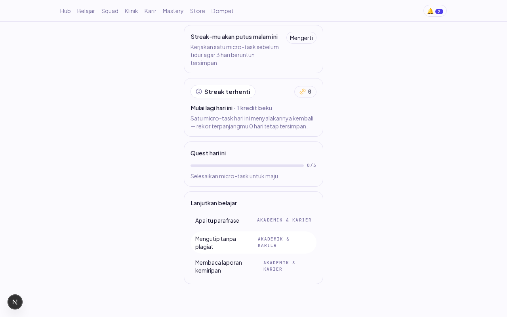
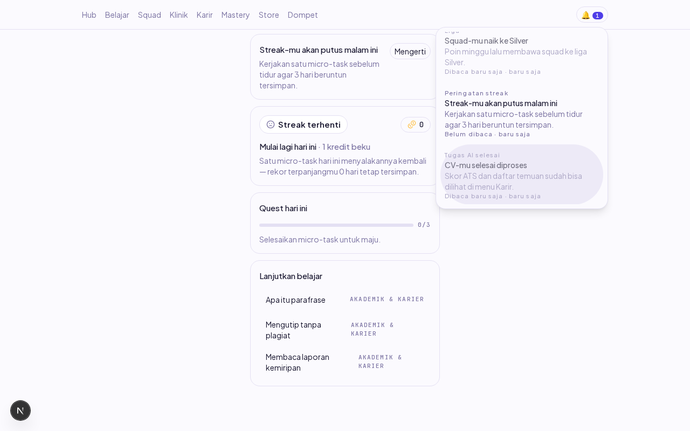
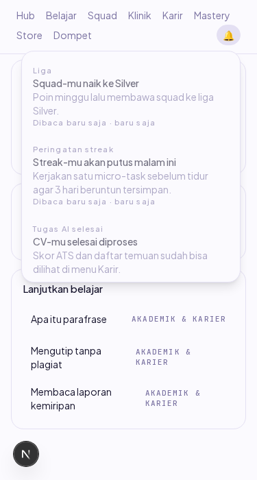

Laporan verifikasi end-to-end item backlog N-02 (Dev B). Dikerjakan 18 Okt 2026 (sesi susulan minggu 12–16 Okt).
Mahasiswa kini melihat lonceng notifikasi di navigasi setiap layar student: lencana jumlah belum dibaca (dihitung server, bukan klien), panel daftar notifikasi terbaru-dulu, dan menandai dibaca bersifat optimistik yang pulih otomatis kalau permintaan gagal (PRD §7 E16 NO-7). Di Hub, banner menampilkan peringatan streak (streak_warning) belum dibaca yang terbaru; menutupnya menandai notifikasi itu dibaca. Lonceng dan banner berbagi SATU state lewat NotificationProvider supaya lencana dan banner tidak pernah saling melenceng.
| # | Skenario | Harapan | Hasil | Cara verifikasi |
|---|---|---|---|---|
| 1 | Registrasi akun baru → masuk Hub (golden path) | URL berakhir di /hub, tanpa galat | LULUS | Playwright: isi form, klik Daftar, polling URL |
| 2 | 3 notifikasi disemai (2 belum dibaca: streak_warning + job_done; 1 dibaca: league_change) | — | TERSEMAI | psql: INSERT ke DB dev lokal untuk user tsb |
| 3 | Buka /hub | Banner streak tampil membawa judul streak_warning TERBARU; lencana lonceng menampilkan 2 (angka server, bukan hitungan halaman) | LULUS | Screenshot 01 + assert teks lencana = "2" |
| 4 | Buka panel, klik item job_done | Lencana turun 2→1 TANPA reload (optimistik), tetap 1 setelah PATCH dijawab server; item berstatus "Dibaca" | LULUS | Screenshot 02 + waitForFunction lencana = "1" |
| 5 | Klik "Mengerti" di banner | Banner hilang DAN lencana hilang (0 belum dibaca) pada saat yang sama — state bersama | LULUS | waitForFunction elemen lencana null + count banner 0 |
| 5b | Sisi server setelah langkah 5 | read_at tersimpan sungguhan: 0 baris belum dibaca di DB (UI tidak berbohong) | LULUS | psql: count read_at IS NULL = 0 |
| 6 | Viewport 375px, buka panel | Tanpa scroll horizontal (scrollWidth = 375), panel muat | LULUS | Screenshot 03 + evaluate scrollWidth |
| 7 | Console + jaringan | Nol error console, nol request gagal (di luar 401 pre-login) | LULUS | Listener console 'error' + response ≥400 |
| 8 | Pemulihan optimistik (NO-7) saat PATCH gagal | read_at kembali null, hitungan belum dibaca naik kembali | LULUS (unit) | Unit test mesin notification-bell.spec.ts + sabotase: cabut pemulihan → 1 test merah → dipulihkan |
| 9 | Tamu (tanpa sesi) | Lonceng tidak tampil sama sekali (bukan error) | LULUS (unit) | Transisi bellGagal('UNAUTHENTICATED') → 'tanpaSesi' |

01 — Hub desktop: banner peringatan streak di atas kartu streak, lencana lonceng "2".

02 — Panel notifikasi: item "CV-mu selesai diproses" baru ditandai dibaca, lencana turun ke 1.

03 — Viewport 375px: panel muat tanpa scroll horizontal.
| Pemicu | Gejala | Root cause | Expected setelah perbaikan | Reproduce |
|---|---|---|---|---|
| Menutup banner streak saat panel lonceng memperlihatkan unread | Banner hilang + server menerima PATCH, tetapi lencana lonceng TIDAK turun (tetap "1" selamanya) | Lonceng dan banner masing-masing meng-fetch GET /notifications dan memegang state sendiri — dua sumber untuk satu fakta. Ketemu OLEH verifikasi langkah 5 (bukan dari membaca kode) | Satu state bersama (NotificationProvider): lencana dan banner berubah di saat yang sama; kegagalan PATCH memulihkan keduanya bersama |
Daftar → semai notifikasi → buka /hub → klik item di panel → klik "Mengerti" di banner → amati lencana |
| Dev server Next.js hidup lama + refactor menambah file baru (provider) | Halaman menyajikan komponen versi LAMA (state sendiri) meski kode sudah diperbaiki — perbaikan seolah "tidak bekerja" | Chunk basi di cache .next setelah HMR lintas sesi restart | Setelah refactor struktural: bersihkan apps/web/.next dan muat ulang halaman penuh sebelum menyimpulkan gagal |
Bandingkan perilaku sebelum/sesudah rm -rf apps/web/.next + restart dev:web |
packages/contracts).new Date() di dalamnya) supaya unit test deterministik — pola C-03.sedangDitandai), bukan cuma tombol disabled — pola L-04.tanpaSesi → komponen null.| Perintah | Hasil |
|---|---|
pnpm test (web) | 91/91 hijau (13 baru: mesin lonceng) |
pnpm --filter @strive/api test | 311/311 hijau (spec unit notifikasi diperbarui mock hitungan) |
pnpm --filter @strive/api test:integration | hijau (4 baru: unread_count akurat, turun tepat satu, idempoten, milik sendiri) |
pnpm lint && pnpm typecheck && pnpm build | hijau |
| Sabotase pemulihan NO-7 | 1 test merah → dipulihkan → 13/13 hijau |
| Audit keamanan (agent-security) | terlampir di PR |